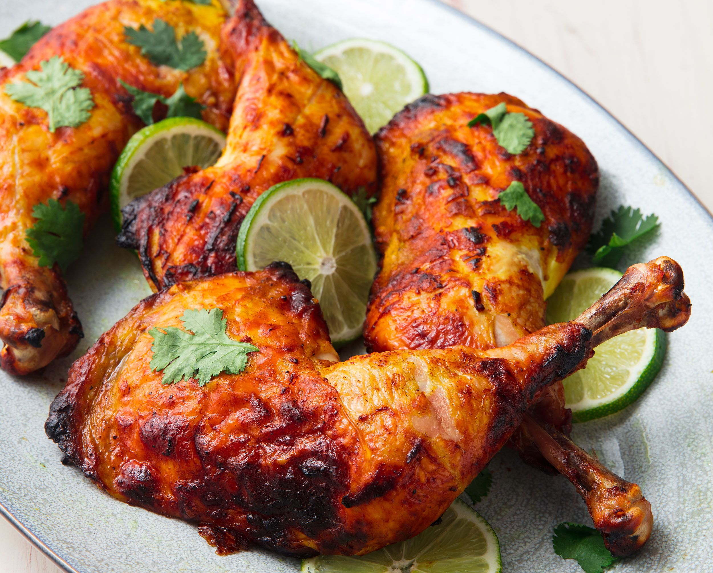

Tandoori Chicken

Descripton
Tandoori chicken is the ancient method of roasting chicken marinated with spices and yogurt in Tandoor a cylindrical
clay oven. Nowadays people are using Oven to roast the tandoor chicken.
The Benefit of Microwave oven is it maintains the target temperature for hours without the
use of additional fuel after reaching the required temperature.
Tandoori chicken tastes like smoky and juicy by marinated with yogurt and Lemon mixed spices.
Ingredients
- Chicken - 1 whole chicken cut into 10 pieces
- Butter or Ghee for Brushing on top
- Chat Masala for Sprinkling on top
- For First Marination
- Chilli Powder - 1 tblspn
- Salt to taste
- Lemon Juice - 2 to 3 tblspn
- For Second Marination:
- Thick Unsour Curd / Yogurt - 1 cup
- Chilli Powder - 1 tblspn
- Coriander Powder / Malli Podi - 2 tblspn
- Cumin Powder - 2 tsp
- Chat Masala Powder - 1 tblspn
- Black Pepper Powder - 1 tsp
- Garam Masala Powder - 1 tblspn
- Turmeric Powder / Manjal Podi - 1 tsp
- Red Food Colouring a pinch
- Ginger Garlic Paste - 2 tblspn
- Kasuri Methi Leaves - 1 tblspn
Instructions
- Take chicken in a bowl, make deep slits on them. Add salt, chilli powder and lemon juice to them and mix well. Leave this aside for 30 mins.
- Now take second marination ingredients in a bowl and mix well. Pour this over the marinated chicken and mix well.
- Leave this to marinate for 6 hours or over night.
- Next day, remove it and let it come to room temp.
- Preheat oven to 250 Degree C.
- Now place the chicken over a foil lined baking tray and pop it in oven for 5 mins, remove it and flip over, apply leftover marination over it if you have any and bake it for 5 more mins.Remove the tray from oven, apply ghee all over it.
- Now reduce the oven temp to 180 degree C and bake it for 10 more mins.
- Remove it and flip over and apply ghee all over it and bake it for 10 more mins.
- Now remove it and set aside. Mean time, increase the oven temp to 250 degree C and set the mode to grill.
- Place the tray near to the grill and cook it for 5 mins till you see some black spots over the chicken.
- Remove it from oven, give a final glaze with ghee and sprinkle some chat masala over it.
- Serve
back to home